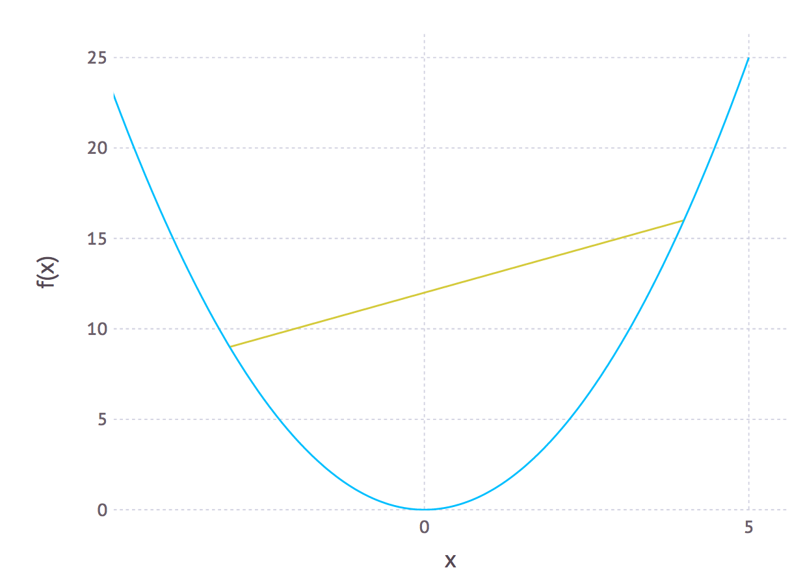

Convex.jl
Optimization for Everyone
David Zeng · Karanveer Mohan
What is Convex.jl
- Interface between math and solvers
- Focus on convex optimization
Convex Optimization
- Fast (provable polynomial complexity)
- Global solution
- Sub-routines and relaxations
Applications
- Machine learning
- Finance
- Signal and image processing
- Computer vision
- Robot motion planning
- Quantum science
- Cooking?!
Convex Functions
$f$ is convex if the domain of $f$ is a convex set, and
for all $\theta \in [0,1]$
$$
f(\theta x + (1-\theta)y ) \leq \theta f(x) + (1-\theta) f(y)
$$
Equivalently:
- $f$ has nonnegative (upward) curvature
- The graph of $f$ never lies above its chords
- $f'' \geq 0$ (if $f$ is differentiable)

Other Definitions
- $f$ is concave if and only if $-f$ is convex
- $f$ is affine if and only if $f$ is both convex and concave
Traditional Form
$$
\begin{array}{ll}
\mbox{minimize} & f_0(x) \\
\mbox{subject to} & f_i(x) \leq 0, \quad i=1, \ldots, m_1\\
& h_i(x) = 0, \quad i=1, \ldots, m_2\\
\end{array}
$$
- Variable $x\in \mathbf{R}^n$
- $f_i$ are all convex
- $h_i$ are all affine
Conic Form
$$
\begin{array}{ll}
\mbox{minimize} & c^T x \\
\mbox{subject to} & Ax + s= b\\
& s \in \mathcal K\\
\end{array}
$$
where $\mathcal K$ is a convex cone
$$ s \in \mathcal K \iff rs \in \mathcal K, \quad \forall r>0$$
Some Convex Cones
- Positive orthant: $$\mathcal K_+ = \{x: x\geq 0\}$$
- Second order cone: $$\mathcal K_{\mathrm{SOC}} = \{(x,t): \|x\|_2 \leq t\}$$
- Semidefinite cone: $$\mathcal K_{\mathrm{SDP}} = \{X: X = X^T,~ v^T X v \geq 0,~ \forall v \in \mathbf{R}^n\}$$
Affine Functions
- +, -, /, *
- Indexing: x[1:3, 2]
- k-th diagonal: diag(x, k)
- Transpose: x'
- Dot product: x' * y
- Reshape: vec(x) or reshape(x, 2, 3)
- Stacking: [x y] or [x, y]
Elementwise Functions
- Min, max: min(x, y) or max(x, y)
- Minimum, maximum: minimum(x) or maximum(x)
- Positive: pos(x)
- Negative: neg(x)
- Inverse positive: inv_pos(x)
- Square, square root: x^2 or sqrt(x)
- Absolute value: abs(x)
- Geometric mean: geo_mean(x, y)
- Exponent, log: exp(x) or log(x)
Vector or Matrix Functions
- Norm: norm(x, 1), norm(x, 2), norm(x, :Inf)
- Quadratic form: quad_form(x, P)
- Quadratic over linear: quad_over_lin(x, y)
- Norm_2 squared: sum_squares(x)
- Inverse positive: inv_pos(x)
- Square root: sqrt(x)
- Square: x^2
- Absolute: abs(x)
- Geometric mean: geo_mean(x, y)
- Max/min eigenvalue: lambda_max(X), lambda_min(X)
- Singular values: nuclear_norm(X), operator_norm(X)
Nonconvex optimization
- Mixed integer programs supported
Why Convex.jl?
- Separation of concerns
- 40+ functions supported
- MathProgBase interface to solvers
What's next?
- Other forms of convex optimization problems
- More functions (tell us what you want!)
- More backend solvers
- We value your feedback!
Collaborators
- Convex.jl: Madeleine Udell, Jenny Hong
- cvx: Michael Grant, Stephen Boyd
- cvxpy: Steven Diamond, Eric Chu, Stephen Boyd
- scs: Brendan O’Donoghue, Eric Chu, Neal Parikh, Stephen Boyd
- ecos: Alexander Domahidi, Eric Chu, Stephen Boyd
- The JuliaOpt team + Tony Kelman